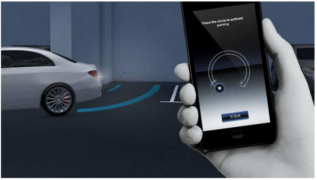
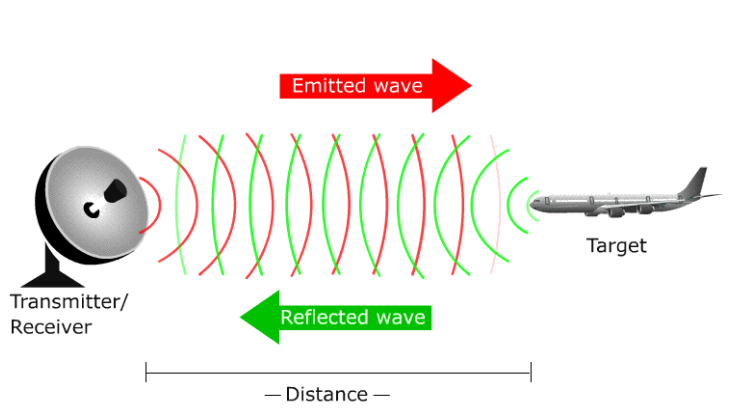
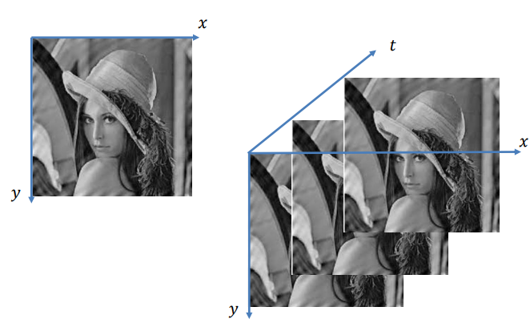
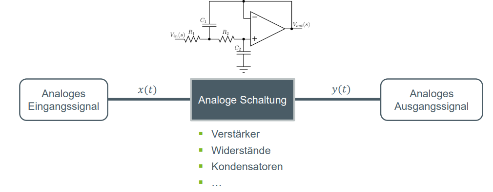
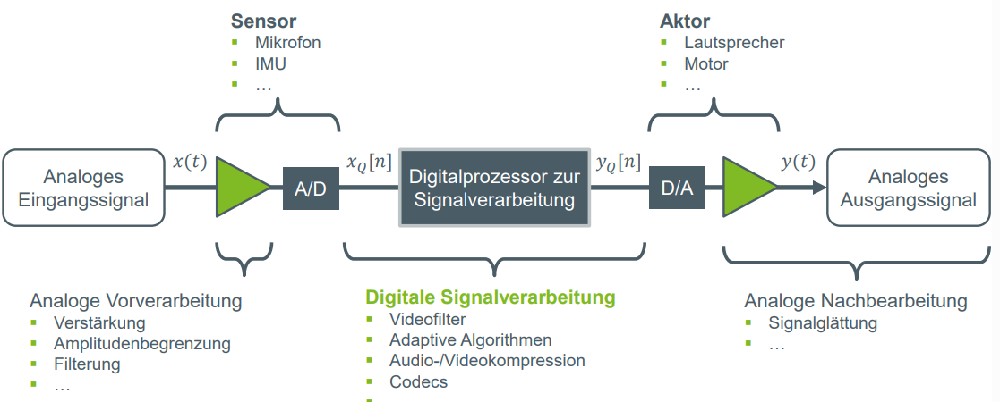

13. Digitale Signalverarbeitung#
Einführung in die Digitale Signalverarbeitung
Motivation: Wieso beschäftigen wir uns mit Digitalen Signalverarbeitung?
Motivation: Wieso beschäftigen wir uns mit Digitalen Signalverarbeitung?
1. Kommunikationssysteme:
Die Digitale Signalverarbeitung spielt eine zentrale Rolle in modernen Kommunikationssystemen wie Mobilfunknetzen, WLAN, Satellitenkommunikation und Breitbandinternet.
2. Bild-und Videobearbeitung:
In der Bild- und Videoverarbeitung werden DSP-Techniken eingesetzt, um Bilder und Videos zu verbessern, zu komprimieren, zu analysieren und zu verarbeiten. Anwendungen reichen von medizinischen Bildgebungsverfahren über Überwachungssysteme bis hin zu Videokonferenzsystemen.
3. Automobiltechnik
In modernen Fahrzeugen werden DSP-Algorithmen für verschiedene Anwendungen eingesetzt, darunter Spracherkennungssysteme, Bildverarbeitungssysteme für Fahrerassistenzsysteme, Aktive Geräuschunterdrückung (ANC) und Audioverarbeitungssysteme.

4. Instrumentierung und Regelungstechnik:
In der Instrumentierung und Regelungstechnik werden DSP-Algorithmen verwendet, um Sensordaten zu verarbeiten, Steuersignale zu generieren und Regelungssysteme zu entwerfen, z.B. für Robotik, Automatisierung, Luftfahrt und industrielle Prozesssteuerung.

Matlap/Simulink
Welche Alternative zu Phyton, um digitale Signale Darzustellen ?MATLAB:
- In Matlab können digitale Signale mithilfe von Befehlen und Funktionen für die Datenvisualisierung dargestellt werden
- Zum Beispiel kann man mit den Befehlen plot, stem, subplot und imshow digitale Signale in Form von Zeitbereichsplots, Spektrumanalysen, Augendiagrammen und anderen Diagrammtypen visualisieren.
- Zum Plotten eines einfachen digitalen Signals x gegen die Zeit t kann man den Befehl plot(t, x) verwenden. Für diskrete kann man den Befehl stem(n, x) verwenden, wobei n die Zeitpunkte der Abtastung und x die Abtastwerte sind.
- MATLAB bietet auch eine Vielzahl von Funktionen zur Signalverarbeitung und Analyse, mit denen man z.B. digitale Signale filtern, transformieren und spektral analysieren kann
Simulink
- In Simulink werden digitale Signale mithilfe von Blöcken modelliert, die verschiedene Signalquellen, Verarbeitungsalgorithmen und Ausgabegeräte darstellen.
- Um ein digitales Signal zu modellieren und zu visualisieren, erstellt man ein Simulink-Modell, fügt Signalquellen und Verarbeitungsblöcke hinzu und verbindet diese entsprechend. Um die Signale während der Simulation darzustellen, verwendet man am Ende des Modells einen Scope-Block.
- Simulink bietet auch spezielle Blöcke für die digitale Signalverarbeitung, wie z.B. Filterblöcke, FFT-Blöcke und DSP-Toolbox-Blöcke, die für die Verarbeitung und Analyse digitaler Signale in Echtzeit verwendet werden können
- Sprache, Musik
- Bilder und Videos
- Funksignale
- medizinische Signale
- Ein Signal ist eine physikalische Größe, die Informationen trägt und durch eine oder mehrere unabhängige Variablen dargestellt wird
- Es ist eine mathematische Funktion von mindestens einer unabhängigen Variablen, wie Zeit, Raum usw.
- 𝑥 𝑡 + 𝑇 = 𝑥 𝑡 , t, T ∈ ℝ (kontinuierlich)
- 𝑥 𝑛 + 𝑁 = 𝑥[𝑛], 𝑛 ∈ ℤ , 𝑁 ∈ ℕ (diskret) (Grund-)Periode: Das kleinste 𝑇0 bzw. 𝑁0, sodass:
- 𝑥 𝑡 + 𝑇0 = 𝑥 𝑡 (kontinuierlich)
- 𝑥 𝑛 + 𝑁0 = 𝑥 𝑛 (diskret)
- Frequenz: Kehrwert 𝑓 =1/T
- Speicherung
- Rekonstruktion
- Trennung von Nutzsignal (Information) und Rauschen
- Kompression
- Merkmalextraktion für Klassifikation
- Präzision und Hohe Genauigkeit bei großer Wortbreite
- Reproduzierbarkeit
- Hohe Zuverlässigkeit
- Geringe Störempfindlichkeit
- Flexibilität
- Skalierbarkeit
- Zusätzlicher Schaltungsaufwand (A/D- und D/A-Wandlung)
- Rechenleistung
- Verzögerung
- Samplinfehler
- Quantisierungsfehler
- Signalrauschen
- Sehr flexibel, Teuer, Schnell einsetzbar, Hohe Leistungsaufnahme,
Nähe zwischen Entwicklungsumgebung und Betriebsumgebung
- Weniger Flexibilität
, Höhere Geschwindigkeit
, Höherer Entwicklungsaufwand,
Optimierte Architektur für Signalverarbeitung
- Mittlere Flexibilität, Mittlere Geschwindigkeit, Geringer Entwicklungsaufwand, Günstig
- Hohe Geschwindigkeit,
Hohe Parallelisierbarkeit,
Hohe Entwicklungskosten und Entwicklungsdauer Digitale Signalverarbeitung befasst sich mit der Analyse, Modellierung und Verarbeitung von Signalen
Sie spielt eine entscheidende Rolle in zahlreichen Anwendungen wie Telekommunikation, Medizintechnik und Bildverarbeitung.
Wichtige Signalarten sind kontinuierliche und diskrete, periodische und aperiodische, deterministische und stochastische, eindimensionale und mehrdimensionale Signale
Durch die richtige Signalverarbeitung können Muster erkannt, Trends vorhergesagt und komplexe Probleme gelöst werden
Signale
Definition: Ein Signal ist eine Informationstragende physikalische Größe, die zeitlich veränderbar istBeispiele für Informationsträger:
Weitere Definitionen:
Beispiele für eine unabhängige Variable sind:
elektrische Größen wie Stromstärke oder Spannung über die Zeit 𝑡 (𝑢(𝑡),𝑖(𝑡)) und Kryptoindizes über Wochen/Monate/Jahre 𝑛(𝑑(𝑛)).
Beispiele für mehrere unabhängige Variablen sind:
Grauwert: Helligkeit oder Intensität eines Bildes über den Raumkoordinaten 𝑥 und 𝑦 : 𝐼(𝑥, 𝑦)
Schalldruck an den Raumkoordinaten 𝑥, 𝑦 und z über die Zeit 𝑡: 𝑝(𝑥, 𝑦, 𝑧,𝑡)
Zeitkontinuierliche vs. diskrete Signale
Kontinuierliche Siganle
Definition: Ein kontinuierliches Signal ist eine Funktion, die über einen kontinuierlichen Bereich von Zeit oder Raum definiert ist
Beispiel:
Die Spannung an einem elektrischen Stromkreis, die kontinuierlich variiert, während sie über die Zeit gemessen wird. Mathematisch kann dies als 𝑢 ( 𝑡 ) u(t) dargestellt werden, wobei 𝑡 t die Zeit ist und 𝑢 u die Spannung
Zeitdiskrete Signale
Definition:Ein diskretes Signal ist eine Funktion, die nur an diskreten Punkten im Zeit- oder Raumkontinuum definiert ist.
Beispiel:
Die Anzahl der Autos, die eine Mautstelle pro Stunde passieren, wobei die Zählung nur zu bestimmten Zeitpunkten erfolgt. Mathematisch kann dies als 𝑐 [ 𝑛 ] c[n] dargestellt werden, wobei 𝑛 n diskrete Zeitpunkte sind und 𝑐 c die Anzahl der Autos ist.
Periodische vs. aperiodische Signale
Periodische Signale
Definition:Periodische Signale sind Signale, die sich regelmäßig wiederholen und eine bestimmte Periode haben.
Signalwiederholung in festem Abstand
Beispiel:
Periodische Impulse oder periodische Funktionen mit einer klar definierten Wiederholungszeit
Aperiodische Signale
Definition: Aperiodische Signale sind Signale, die sich nicht regelmäßig wiederholen und keine klare Periodizität aufweisen.
Beispiel:
Stochastische Signale: Signale, die zufällig sind und keine bestimmte periodische Struktur aufweisen, wie Rauschen oder zufällige Prozesse.
Deterministisch vs. stochastische Signale
Deterministische Signale
Definition: Deterministische Signale sind Signale, bei denen die Werte zu jedem Zeitpunkt eindeutig und vorhersagbar sind. Sie können durch mathematische Formeln oder deterministische Prozesse genau beschrieben werden.
Beispiel:
Exponentiell abklingende Signale: Signale, die durch einfache exponentielle Funktionen wie 𝑥 ( 𝑡 ) = 𝑒 − 𝛼 𝑡 x(t)=e −αt beschrieben werden können.
Stochastische Signale:
Definition: stochastische Signale sind Signale, bei denen die Werte zu jedem Zeitpunkt zufällig sind und nicht genau vorhersagbar sind. Sie können durch statistische Verteilungen oder stochastische Prozesse beschrieben werden.
Beispiel:
Rauschsignale: Signale, die zufällige Schwankungen oder Störungen aufweisen, wie thermisches Rauschen in elektronischen Schaltungen oder atmosphärisches Rauschen in Kommunikationssystemen.
Eindimensionale vs. mehrdimensionale Signale
Eindimenionale Signale
Definition: Eindimensionale Signale sind Signale, die entlang einer einzigen unabhängigen Variablen definiert sind, wie Zeit, Entfernung oder eine andere skalare Größe.
Beispiel:
Zeitabhängige Signale: Signale, die sich nur über die Zeit ändern, wie Audioaufnahmen, Musikstücke oder Bewegungssensordaten.
Mehrdimensionale Signale
Definition: Mehrdimensionale Signale sind Signale, die entlang mehrerer unabhängiger Variablen definiert sind, wie Raumkoordinaten, mehrere Frequenzen oder mehrere Kanäle.
Beispiel:
Bildsignale: Signale, die sowohl in horizontaler als auch in vertikaler Richtung (Pixel) variieren, wie Fotografien, medizinische Bilder oder Satellitenbilder.

Was ist digitale Signalverarbeitung?
Definiton: Ist ein Bereich der Ingenieurwissenschaften und der Informatik, der sich mit der Analyse, Modellierung, Verarbeitung und Interpretation von Signalen befasst
Analyse:
Signalverarbeitung beinhaltet die Untersuchung von Signalen, um deren Eigenschaften, Muster und Strukturen zu verstehen. Dies umfasst die Bestimmung von Signalparametern wie Amplitude, Frequenz, Phase und Zeitdauer.
Modellierung:
Es beinhaltet die Entwicklung von mathematischen Modellen und Algorithmen, die Signalverhalten und -eigenschaften beschreiben können. Diese Modelle werden verwendet, um Signale zu analysieren, zu synthetisieren und zu interpretieren.
Verarbeitung:
Signalverarbeitung umfasst verschiedene Techniken zur Manipulation und Transformation von Signalen, um bestimmte Ziele zu erreichen. Dies kann Filterung, Frequenzanalyse, Zeit-Frequenz-Analyse, Codierung, Dekodierung, Rauschunterdrückung und mehr umfassen.
Interpretation:
Nach der Verarbeitung werden die resultierenden Signale interpretiert, um Informationen zu extrahieren und Entscheidungen zu treffen. Dies kann die Erkennung von Mustern, die Klassifizierung von Objekten, die Vorhersage von Trends oder die Steuerung von Systemen umfassen.
Wozu Braucht man sie?:
Analoge Signalverarbeitungskette

Beschreibung: Bei einer analogen Signalverarbeitungskette werden die analogen Einganssignale nur durch analoge Schaltungen wie Verstärker, Widerstände oder Kondensatoren beeinflusst und dann als analoges Ausgangssignal ausgegeben.
Digitale Signalverarbeitungskette

Beschreibung:Bei der digitalen Signalverarbeitungskette werden die Signale zunächst durch Umwandler digitalisiert und anschließend wieder zu einem analgoen Signal umgewandelt. Die wesentliche Signalverabeitung passiert dabei durch den Digitalprozessor, der das Signal noch vor der Umwandlung zu einem analogen Signal, bearbeitet.
Eigenschaften der digitalen Signalverarbeitung
- Vorteile
- Nachteile
Realisierungsmöglichkeiten
Allzweck-Rechner (PCs, Workstation, Großrechner, Supercomputer, …)
DSP
Mikroprozessoren
Spezialschaltungen (ASICs, FPGAs)